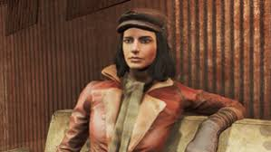

CHARACTERS & COMPANIONS
Companions

Companions are characters who can travel with the player,
assist in combat, and react to player choices.
Each companion has:
- A unique personality
- Personal likes and dislikes
- A backstory that can be explored
Popular companions include:
- Codsworth – A Mister Handy robot from before the war

- Piper Wright – A journalist seeking the truth

- Nick Valentine – A synth detective with a human past

Companions help new players learn about the world
through dialogue and interactions.